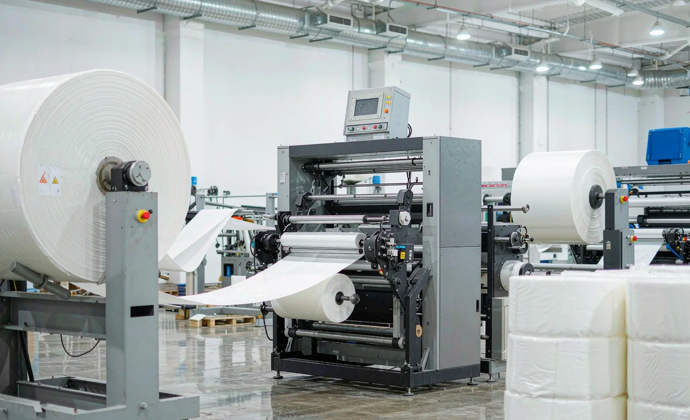
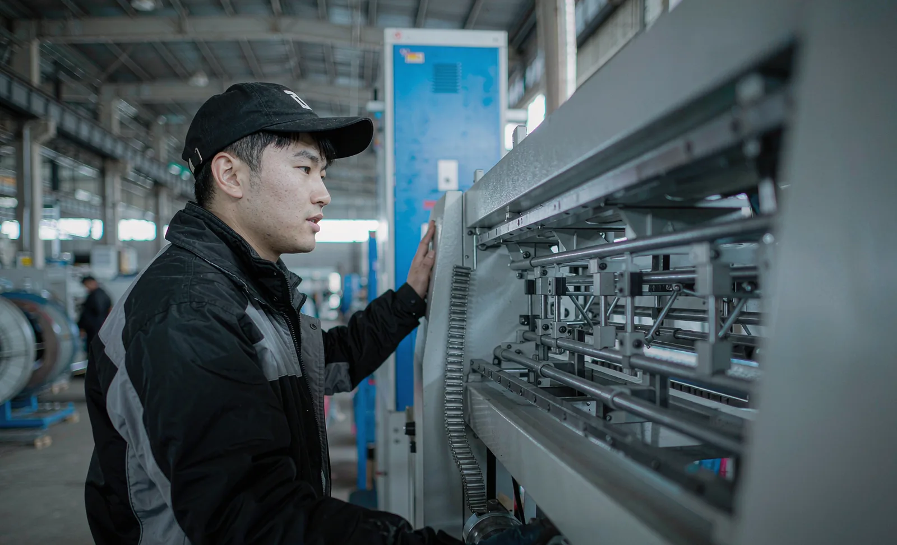

Published November 25, 2026 | By HDPTH Technical Editorial Team

Every converting company that outgrows its first machine eventually faces the same fork: buy the next slitter rewinder from a supplier down the road, or import one at a visibly lower price from a factory several thousand kilometres away. The visible price difference gets all the attention in the boardroom, and it is genuine — manufacturing cost structures differ between regions, and capital is often the single largest line in the project budget. But a slitter rewinder is not a catalogue purchase. It is an engineered system that must be specified against your material, installed into your building, commissioned against an acceptance protocol, documented for your regulator, and supported with spares and expertise for a decade or more. Every one of those steps happens somewhere, and distance changes how much they cost, how long they take, and who carries the risk when something goes wrong. A buyer who compares only machine prices is comparing the smallest part of both offers.
Why sourcing geography is a decision, not a price tag
The domestic-versus-overseas question is best treated as a risk-and-capability audit rather than a price comparison. What the buyer is really choosing is the shape of the relationship: a domestic supplier offers proximity — engineers who can reach the site quickly, a shared language and business culture, familiarity with local electrical codes and inspection practices, and a service network that can attend a breakdown the same week. An overseas supplier offers capital efficiency and, where the factory is strong, access to machine families that serve high-volume nonwoven converting around the world, along with configurations and options a small domestic builder may never have engineered. Neither profile is universally better; what differs is where each model can fail. Proximity fails when the local supplier’s engineering depth cannot match the application — the nearest machine is not the best machine. Distance fails when support, documentation and delivery discipline are not contracted for, because every weakness that a domestic buyer fixes with a phone call becomes, for an importer, a project risk.
The practical consequence is that geography should never be the first question. The first question is whether each candidate supplier — wherever it is — can prove the capability your material demands: the right cutting method for your product, tension control matched to your web, and a commissioning process that verifies all of it before you accept the machine. Geography then becomes a cost-and-risk overlay on an engineering comparison, not a substitute for one.
Making the quotations comparable: the total landed cost base
The single most common error in this decision is comparing two numbers that are not the same object. An overseas quotation typically prices the machine at the factory gate: freight, insurance, import duty, customs clearance, inland transport, unloading and rigging, and often much of the installation and commissioning labour sit outside it. A domestic quotation more often carries some of those items inside the price. Before any comparison is honest, both offers must be rebuilt on the same base — a total landed cost that runs from the supplier’s floor to your machine producing saleable rolls. The line items are consistent across borders: machine price; freight, insurance and customs; site preparation and utilities work; installation, rigging and alignment; commissioning and acceptance testing; operator training; the documentation and compliance work needed in your market; the recommended spare-parts and consumables package for the first years of production; and the working capital tied up between order payment and first output.
Two of those items deserve special attention because buyers routinely underestimate them. The first is commissioning: on an imported line, someone must make the machine run your material, and that person is either flown in, contracted locally, or absent — and each option costs a different amount and carries a different risk. The second is compliance: the electrical documentation, safety file and conformity work that your regulator, insurer or customer audits expect must exist in the form your market accepts, and producing or translating that set is real work for somebody in the transaction. Write both costs into the comparison explicitly rather than discovering them at installation.
The hidden costs of distance — and how disciplined buyers manage them
Distance adds cost through friction, and most of that friction can be named. Communication spans time zones and languages, so specification errors surface later and costlier than they would across a shared table. Spare parts travel for days instead of hours, which turns minor consumable misses into standing downtime unless the buyer stocks intelligently. Site support arrives as a travel budget and a visa calendar rather than a local service call. Delivery is a logistics project — ocean freight, port clearance, oversized transport, offloading a machine that arrived in one piece — with dates that shift for reasons no engineer controls. None of these frictions is a reason to reject an overseas supplier; all of them are reasons to manage the project differently. Buyers who import well do four things: they front-load the specification work, because every ambiguity crosses a language barrier; they order the recommended spare-parts package with the machine, sized for the first production years; they nominate a local partner or trained maintenance team before the machine ships; and they fix the delivery term and risk transfer deliberately in the contract rather than accepting a default.
Where a domestic supplier genuinely wins
An honest guide must concede the cases where the domestic option is simply the right answer. The strongest is the time-critical project: when the line is needed on a date the business cannot move, the shorter and more controllable domestic delivery chain is worth real money. The second is the first machine: a company buying its first serious slitter rewinder, without an experienced maintenance team or an engineering department, buys with it a steep learning curve, and a supplier who can sit in the control room during the first week of production shortens that curve more than any documentation can. The third is the thin-margin product: where the machine is simple, speeds are moderate, and the domestic build meets the specification, the capital difference may be small enough that support proximity tips the balance. The fourth is the regulated buyer whose customers audit suppliers and documentation locally, and who values a supplier that already understands the audit. In each of these cases the domestic premium — where one exists — buys something specific: schedule control, hand-holding, or audit comfort. Buyers should ask which of those they are actually purchasing, and whether the overseas alternative can offer the same thing another way, before concluding that geography alone decides.

Qualifying an overseas supplier before you sign
Importing works when the supplier is qualified before the order, not after the machine lands. The core tool is the structured factory visit, and it should follow a plan rather than hospitality: see machines under power, not in the assembly yard; watch a roll change and a splice on a running line; open the electrical cabinet and look at the wiring discipline, the drive and control brands, and whether they match what the quotation promises; and ask the factory to show the documentation set for a machine of the same family — FAT protocol, safety file, electrical drawings. Where a visit is impractical at shortlist stage, a remote audit with live video can substitute for part of it, but the final inspection of the machine you actually ordered should happen before it ships, at the factory acceptance test. Alongside the visit runs the reference check: speak with customers in your region or product class who run the supplier’s machines, and ask specifically about the support experience — how spares arrived, how remote diagnostics worked, how the supplier behaved when something failed.
Writing the contract, FAT and shipping terms that protect the purchase
The contract is where a good sourcing decision is protected or squandered, and the clauses that matter are the same for both geographies — only their weight changes. Fix the delivery term and the point of risk transfer explicitly, together with the payment schedule tied to verifiable milestones such as design approval, factory acceptance and shipment, so that money follows demonstrated progress. Write the FAT protocol into the contract itself: the test material, the operating points, the success criteria and the measurement methods, agreed before the machine is built, with the buyer or an appointed representative present — or a defined remote-FAT arrangement with live video, shared HMI access and recorded tension and speed traces when travel is not practical. Specify the documentation set the machine ships with, and in whose language and format. Define the spare-parts commitment: what ships with the machine, what the supplier holds, and how orders are handled across borders. And define support: named contacts, remote diagnostics access, and what happens when the machine stops. None of this is hostile contracting; it is the ordinary paperwork of a serious capital purchase, and a supplier of any nationality who resists it is answering your qualification question for you.
The sourcing decision does not end at the contract — it ends when your crew runs production unaided, and the quality of that outcome is decided long before shipment. The shipping-side mechanics of the imported-machine project, from choosing the right Incoterms rule to preparing clearance documentation, are treated step by step in the Slitter Rewinder Incoterms and Shipping Buyer’s Guide, and the full supplier-qualification method — the questions to ask on a factory visit and the red flags to walk away from — is laid out in the Slitter Rewinder Supplier Factory Tour Checklist. To see how the machines behind this comparison are configured for high-throughput converting, review the HDPTH high-speed slitting machines range.
Comparing Suppliers for Your Next Line?
Send HDPTH your material, web width, speed and utility details. Our engineers will build the application case, provide the full documentation set behind our machines, and support a factory visit or remote FAT — so the decision rests on evidence, not geography.
Submit Your Project InquiryFrequently asked questions
Why do overseas slitter rewinder quotations look cheaper than domestic ones?
An overseas quotation usually prices the machine at the factory gate, while a domestic quotation often carries part of the logistics, compliance and installation burden inside the price. To compare honestly, rebuild both quotes as a total landed cost: machine price, freight and insurance, import duty and clearance, site preparation, installation and commissioning, travel or local engineering support, spare parts and consumables for the first years, and the working capital tied up in a longer delivery pipeline.
How can a buyer verify an overseas slitter rewinder supplier before ordering?
Combine a structured factory visit with remote verification: inspect machines under power rather than in the assembly yard, watch a changeover and a splice on a running machine, review the mechanical and electrical build quality, check the controls and drive brands against the specification, and speak with reference customers running similar materials at similar speeds. A supplier that resists a factory visit or refuses running references is telling you something.
Who is responsible for import duties, customs clearance and compliance paperwork for an imported machine?
Responsibility follows the agreed Incoterms rule in the contract, so the buyer must fix the delivery term deliberately rather than accepting the supplier’s default. Beyond customs, the buyer typically owns the compliance work in the destination market: verifying the electrical documentation against local standards, confirming the safety file and CE or equivalent documentation is complete and transferable, and arranging any inspections required before the machine may run.
Is a domestic supplier always better for service and spare parts?
Not always. A domestic supplier close by can usually respond faster, but response capability depends on the supplier’s service organisation, spare-parts policy and remote-support infrastructure, not on geography alone. A well-organised overseas manufacturer with remote diagnostics, a stocked recommended spare-parts package and named support contacts can outperform a nearby supplier with thin after-sales capacity. Judge the service plan, not the map.
How are factory acceptance tests handled when the supplier is overseas?
The FAT protocol matters more, not less, when travel is expensive: define the test material, the operating points, the failure criteria and the measurement methods in writing before the machine is accepted, and hold the test at the supplier’s factory with the buyer or an appointed representative present, or agree a remote FAT with live video, shared HMI screens and recorded tension and speed traces. What must never be dropped is the acceptance itself — a machine accepted only on photographs cannot be rejected on evidence later.
What should the contract define for an overseas slitter rewinder purchase?
Beyond the technical specification, the contract should fix the delivery term and transfer of risk, the payment schedule tied to verifiable milestones, the FAT protocol and acceptance criteria, the documentation set delivered with the machine, the spare-parts and support commitments with response definitions, and the warranty terms including how remote diagnosis and parts dispatch are handled across borders.